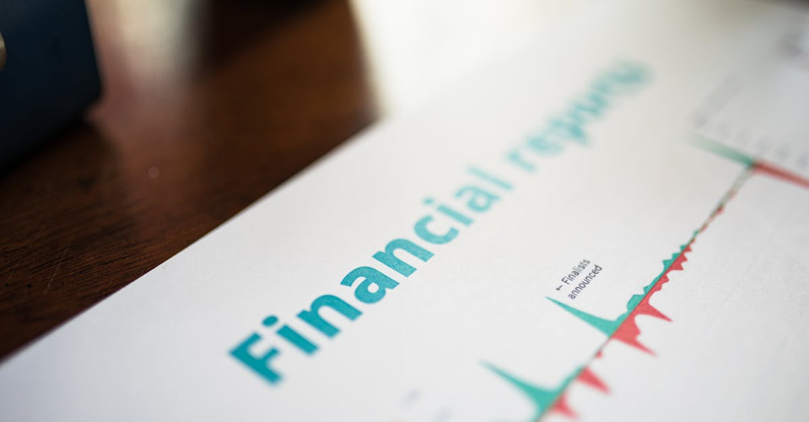

La Malaisie Face à Son Destin Financier : Un Nouveau Gardien de l'Intégrité
L'actualité économique et financière mondiale est souvent ponctuée d'événements qui, à première vue, semblent lointains mais dont les répercussions peuvent être profondes sur nos stratégies d'épargne et d'investissement. La Malaisie, acteur clé de l'économie asiatique, vient de nommer Abdul Halim Bin Aman comme son nouveau chef de la Commission malaisienne anti-corruption (MACC). Cette annonce, relayée par Bloomberg Markets, marque un tournant significatif. Abdul Halim prendra les rênes de cette institution cruciale après le départ d'Azam Baki le mois prochain. Mais pourquoi une telle nomination devrait-elle retenir l'attention des investisseurs, et en particulier de ceux qui s'intéressent à l'épargne intelligente et aux placements automatisés par IA ?
👉 À lire : Le Crédit Privé : Un Faux Ami aux Allures d'Action ?
La réponse réside dans la corrélation indéniable entre la qualité de la gouvernance, la lutte contre la corruption et la confiance des marchés. Dans un monde où les capitaux circulent librement et où les opportunités d'investissement sont scrutées à la loupe, la perception d'un pays en matière d'intégrité est un facteur déterminant. Un environnement où la corruption est endémique est un repoussoir pour les investisseurs, car il introduit une couche de risque imprévisible, érode la transparence et peut fausser la concurrence. À l'inverse, un État qui démontre une volonté ferme de combattre ce fléau envoie un signal positif, rassurant les capitaux étrangers et stimulant l'investissement local. C'est une variable que nos modèles d'IA, chez Epargne IA, intègrent avec une finesse croissante dans l'évaluation des marchés émergents.
👉 À lire : Fonds Mutuels Indiens : La Fidélité des Investisseurs à l'Épreuve
Le rôle du MACC est donc central. C'est l'organisme chargé de veiller à l'éthique dans la fonction publique et le secteur privé, d'enquêter sur les allégations de corruption et de traduire les coupables en justice. Sa crédibilité et son efficacité sont des piliers de la stabilité économique. La transition à la tête de cette institution n'est donc pas un simple remaniement administratif. Elle est perçue comme un baromètre de l'engagement politique du gouvernement malaisien envers une bonne gouvernance. Pour les investisseurs, cela signifie une potentielle réduction des risques systémiques, une meilleure prévisibilité et, à terme, des rendements plus stables et plus élevés. L'arrivée d'Abdul Halim Bin Aman est ainsi un événement à analyser non seulement pour ce qu'il représente intrinsèquement, mais aussi pour les ondes qu'il pourrait générer sur les marchés régionaux et au-delà. Les yeux des analystes financiers et des algorithmes d'investissement sont désormais rivés sur la Malaisie, guettant les premiers signes de l'impact de cette nouvelle direction.

La Corruption : Un Fardeau Invisible Mais Coûteux pour l'Épargne Mondiale
Avant d'explorer la personnalité et la mission d'Abdul Halim Bin Aman, il est essentiel de comprendre pourquoi la lutte anti-corruption est si cruciale pour l'économie et, par extension, pour les portefeuilles d'investissement. La corruption, sous toutes ses formes – pots-de-vin, détournement de fonds, favoritisme – agit comme un impôt occulte qui pèse sur l'ensemble de la société. Pour les entreprises, cela se traduit par des coûts supplémentaires, une concurrence déloyale et une incertitude juridique. Pour les citoyens, cela signifie des services publics dégradés, une répartition inéquitable des richesses et une érosion de la confiance dans les institutions.
Mais quel est l'impact direct sur l'investissement ? En premier lieu, la corruption dissuade l'investissement direct étranger (IDE). Les entreprises internationales hésitent à s'implanter dans des environnements où les règles du jeu sont floues et où le succès dépend davantage des connexions que du mérite. « Un pays rongé par la corruption est comme un navire avec des fuites constantes ; il peut avancer, mais son efficacité est compromise et son naufrage est toujours une menace latente », observe ironiquement Dr. Léa Dubois, spécialiste de l'économie politique. Cette réticence à investir se traduit par une croissance économique ralentie, moins d'emplois et une diminution des opportunités pour les entreprises locales.
- Coûts cachés : La corruption augmente les coûts de transaction, les délais administratifs et les risques juridiques.
- Distorsion des marchés : Elle favorise les monopoles et les oligopoles, étouffant l'innovation et la concurrence.
- Érosion de la confiance : Les investisseurs perdent foi dans la prévisibilité des politiques et la protection de leurs actifs.
- Volatilité accrue : Les marchés perçus comme corrompus sont souvent plus volatils, rendant la planification à long terme difficile.
Pour les investisseurs particuliers, cela signifie que leurs placements dans des marchés à forte corruption sont soumis à des risques plus élevés. La valeur des entreprises peut être artificiellement gonflée, les bénéfices détournés, et les régulations contournées, rendant l'analyse fondamentale classique moins fiable. C'est précisément dans ces contextes que l'intelligence artificielle déploie toute sa puissance. En analysant d'énormes volumes de données – rapports de gouvernance, actualités politiques, indicateurs de transparence internationaux – un Agent IA peut identifier les signaux faibles de risques de corruption et ajuster en conséquence les stratégies d'investissement, protégeant ainsi l'épargne de ses utilisateurs. La lutte anti-corruption en Malaisie n'est donc pas seulement une affaire de moralité ; c'est un impératif économique qui a des répercussions tangibles sur la performance des marchés et la sécurité de nos placements.
Abdul Halim Bin Aman : Un Profil, Une Mission, Des Attentes
La nomination d'Abdul Halim Bin Aman au poste de chef de la MACC n'est pas anodine. Elle s'inscrit dans un contexte politique et économique malaisien complexe, où la perception publique de l'intégrité des institutions est sous haute surveillance. Bien que le communiqué de Bloomberg soit concis, la portée de cette désignation est vaste. Pour comprendre les attentes autour de sa prise de fonction, il est essentiel d'examiner le profil typique d'un tel leader et les défis structurels qui l'attendent.
Traditionnellement, les chefs d'organismes anti-corruption dans les nations émergentes sont choisis pour leur réputation d'intégrité inébranlable, leur expérience dans l'application de la loi et leur capacité à résister aux pressions politiques. On attend d'eux qu'ils soient des figures impartiales, capables de mener des enquêtes sans crainte ni favoritisme. Si le parcours spécifique d'Abdul Halim Bin Aman n'est pas détaillé dans l'annonce initiale, son choix suggère qu'il répond à ces critères essentiels. Sa mission sera colossale : il devra non seulement poursuivre la lutte contre les affaires de corruption existantes, mais aussi renforcer la prévention, améliorer la transparence et restaurer la confiance du public et des investisseurs dans le système judiciaire et administratif malaisien.
« La crédibilité d'une institution anti-corruption repose sur trois piliers : l'indépendance, l'efficacité et la perception publique de son équité. Le nouveau chef doit exceller sur ces trois fronts pour espérer un impact durable », affirme un ancien haut fonctionnaire malaisien sous couvert d'anonymat, soulignant l'ampleur de la tâche.
Les défis sont nombreux : faire face aux réseaux de corruption bien établis, souvent imbriqués dans les sphères politiques et économiques, garantir l'autonomie de la MACC face aux ingérences gouvernementales, et moderniser les outils d'enquête pour s'adapter aux nouvelles formes de délinquance financière. Pour les investisseurs, la manière dont Abdul Halim Bin Aman abordera ces défis sera un indicateur clé. Ses premières actions, la nature des enquêtes prioritaires et sa capacité à communiquer de manière transparente seront scrutées. Un leadership fort et décisif pourrait transformer la perception de la Malaisie, la rendant plus attractive pour les capitaux. À l'inverse, toute hésitation ou compromis pourrait renforcer les doutes et fragiliser les marchés. C'est une période d'observation critique pour quiconque souhaite comprendre les dynamiques d'investissement dans cette région stratégique.

Confiance des Investisseurs et Stabilité des Marchés : L'Effet Dominant de la Gouvernance
La nomination d'un nouveau chef anti-corruption en Malaisie n'est pas qu'une simple information administrative ; c'est un événement qui envoie des ondes significatives à travers les marchés financiers mondiaux. La confiance des investisseurs est un actif intangible mais d'une valeur inestimable. Elle est le moteur qui pousse les capitaux à travers les frontières, alimentant la croissance économique et la création de richesse. Et cette confiance est intrinsèquement liée à la perception de la gouvernance et de l'état de droit dans un pays donné.
Lorsqu'un pays comme la Malaisie prend des mesures concrètes pour renforcer sa lutte contre la corruption, les effets sur la confiance des investisseurs peuvent être immédiats et profonds. Premièrement, cela réduit la prime de risque associée aux investissements dans ce pays. Les capitaux étrangers, qu'il s'agisse d'investissements directs dans des entreprises ou de placements sur les marchés boursiers, sont plus enclins à affluer là où ils se sentent sécurisés et protégés par un cadre juridique solide. Une MACC forte et indépendante signifie moins de risques d'expropriation, de contrats truqués ou de régulations arbitraires.
- Augmentation des flux d'IDE : Les entreprises étrangères sont plus enclines à investir dans des projets à long terme.
- Performance boursière améliorée : Les marchés boursiers locaux peuvent bénéficier d'une réévaluation positive, attirant plus d'investisseurs institutionnels.
- Stabilité de la monnaie : Une meilleure gouvernance peut renforcer la crédibilité d'une économie, stabilisant sa monnaie face aux devises étrangères.
- Réduction des coûts d'emprunt : Les pays avec une meilleure gouvernance sont souvent perçus comme moins risqués, ce qui leur permet d'emprunter à des taux plus bas sur les marchés internationaux.
Inversement, toute perception de faiblesse ou de complaisance dans la lutte anti-corruption peut rapidement entraîner une fuite des capitaux, une dévaluation de la monnaie et une chute des marchés boursiers. Les investisseurs n'hésitent pas à retirer leurs fonds des juridictions où l'incertitude règne. « Dans l'économie moderne, l'information circule à la vitesse de la lumière. Les algorithmes d'investissement scrutent chaque annonce politique, chaque rapport de gouvernance, pour détecter le moindre changement dans le profil de risque d'un pays », explique Mme Sophie Martin, analyste financière chez Global Insights. Pour l'épargne intelligente, cela signifie que nos systèmes automatisés sont déjà en train d'analyser les implications potentielles de cette nomination, ajustant les modèles de risque et les allocations d'actifs en fonction des signaux envoyés par Kuala Lumpur. C'est une danse complexe entre la politique, l'économie et la psychologie des marchés, où chaque pas compte.
La Malaisie : Un Baromètre Régional pour l'Épargne et les Placements en Asie du Sud-Est
Au-delà de ses frontières, la Malaisie joue un rôle non négligeable dans la dynamique économique de l'Asie du Sud-Est. Sa stabilité politique et sa gouvernance sont des facteurs observés attentivement par ses voisins et par les investisseurs internationaux qui considèrent la région comme un tout. Ainsi, la nomination d'Abdul Halim Bin Aman et la direction qu'il insufflera à la MACC pourraient avoir des répercussions bien au-delà des rives malaisiennes, servant de baromètre pour l'ensemble de l'ASEAN.
Historiquement, la Malaisie a été un modèle de développement économique, attirant des investissements significatifs grâce à une main-d'œuvre qualifiée, une infrastructure moderne et une relative stabilité politique. Cependant, des scandales de corruption passés ont terni cette image, soulevant des questions sur la durabilité de sa croissance et la sécurité des investissements. Le renforcement de la MACC est donc un signal non seulement pour la Malaisie elle-même, mais aussi pour les autres nations de la région. Il peut encourager d'autres pays à intensifier leurs propres efforts anti-corruption, créant ainsi un environnement d'investissement plus sain et plus prévisible à l'échelle régionale.
Pour les gestionnaires d'épargne et les plateformes d'investissement automatisé, l'Asie du Sud-Est représente un marché en pleine croissance, riche en opportunités mais également en défis. La diversité politique, économique et réglementaire de ses membres exige une analyse fine et constante. Un pays qui se distingue par une gouvernance exemplaire peut devenir un point d'ancrage pour les investissements régionaux, attirant des capitaux qui, autrement, resteraient en dehors de la zone. « L'effet de contagion est réel », explique le Dr. Kenji Tanaka, expert en économies émergentes. « Une Malaisie plus transparente pourrait inciter les investisseurs à reconsidérer l'ensemble de l'ASEAN sous un jour nouveau, en valorisant les efforts de bonne gouvernance de chaque nation membre. »
Dans ce contexte, les systèmes d'épargne intelligente, comme notre Agent IA, sont particulièrement précieux. Ils sont capables de traiter et d'interpréter des données complexes provenant de multiples sources régionales, incluant les rapports de transparence, les indices de perception de la corruption et les annonces politiques. Cette capacité à synthétiser l'information en temps réel permet d'identifier les tendances régionales, de moduler l'exposition aux différents marchés de l'ASEAN et d'optimiser les stratégies d'investissement en fonction de l'évolution de la gouvernance. La Malaisie, par ses actions, peut ainsi influencer non seulement son propre destin financier, mais aussi celui de toute une région, façonnant les choix d'investissement des épargnants du monde entier.
L'IA au Service de l'Investisseur : Naviguer les Complexités de la Gouvernance
Dans le monde volatil des marchés émergents, où les annonces politiques peuvent faire osciller des milliards, la capacité à analyser rapidement et précisément les risques liés à la gouvernance est devenue un avantage concurrentiel majeur. C'est là que l'intelligence artificielle, et plus spécifiquement des outils comme l'Agent IA d'Epargne IA, démontrent leur valeur inestimable. La nomination d'un nouveau chef anti-corruption en Malaisie est un exemple parfait d'un événement qui, bien que non directement financier, a des implications économiques profondes que l'IA peut déchiffrer.
Comment un Agent IA procède-t-il ? Il ne se contente pas de lire les titres d'actualité. Nos systèmes sont conçus pour ingérer et traiter des volumes massifs de données non structurées, incluant :
- Les rapports d'organisations internationales sur la corruption et la transparence (Transparency International, Banque Mondiale).
- Les discours politiques et les déclarations officielles des gouvernements.
- Les analyses de risques géopolitiques et les publications d'experts.
- Les données historiques sur la performance des marchés en réponse à des événements similaires.
- L'analyse sémantique des articles de presse et des réseaux sociaux pour capter le sentiment général.
En croisant ces informations, l'Agent IA peut construire un profil de risque dynamique pour chaque pays et chaque marché. Par exemple, si les premières actions d'Abdul Halim Bin Aman sont perçues comme décisives et efficaces, l'IA pourrait réévaluer à la baisse le risque lié à la gouvernance malaisienne, suggérant une augmentation de l'exposition à certains actifs malaisiens ou une réallocation de l'épargne vers des secteurs jugés plus stables. À l'inverse, si des signaux négatifs émergent, l'Agent IA pourrait recommander une réduction des positions pour protéger le capital.
« L'humain peut être sujet aux biais émotionnels ou à une surcharge cognitive face à l'abondance d'informations. L'IA, elle, opère avec une logique froide et une capacité de traitement sans précédent, identifiant des corrélations que nous pourrions manquer », explique un data scientist de notre équipe.
L'avantage est double : non seulement l'IA offre une analyse plus objective et rapide, mais elle permet également d'automatiser les ajustements de portefeuille, garantissant que votre épargne est toujours optimisée en fonction des dernières informations et des risques perçus. Dans un monde où la complexité ne cesse de croître, s'équiper d'un Agent IA, c'est se donner les moyens de transformer l'incertitude en opportunité, en adaptant intelligemment ses placements à la réalité changeante des marchés mondiaux, y compris ceux influencés par des nominations clés comme celle du nouveau chef anti-corruption de Malaisie.
Au-delà de la Malaisie : L'Importance Universelle de la Gouvernance pour l'Épargne à Long Terme
L'actualité malaisienne, avec la nomination d'Abdul Halim Bin Aman, nous rappelle une vérité fondamentale qui transcende les frontières géographiques et les spécificités des marchés : la qualité de la gouvernance est un pilier essentiel de l'investissement à long terme et de la construction d'une épargne durable. Que l'on investisse en Malaisie, en France, aux États-Unis ou dans n'importe quel autre pays, les principes restent les mêmes : des institutions solides, une transparence accrue et une lutte efficace contre la corruption sont des gages de stabilité et de prospérité.
Pour l'épargnant qui vise la croissance de son capital sur plusieurs décennies, comprendre ces dynamiques est crucial. Un pays dont les institutions sont fragiles ou corrompues présente un risque systémique élevé. Les politiques peuvent changer du jour au lendemain, les droits de propriété peuvent être remis en question, et les rendements des investissements peuvent être érodés par des pratiques illégales. À l'inverse, un État qui s'engage résolument sur la voie de la bonne gouvernance crée un environnement fertile pour l'investissement, où les entreprises peuvent prospérer, l'innovation est encouragée et la justice est garantie.
Cette observation n'est pas limitée aux marchés émergents. Même dans les économies développées, les scandales de gouvernance ou les manquements à l'éthique peuvent avoir des répercussions significatives sur la valorisation des entreprises et la confiance des marchés. C'est pourquoi une approche d'investissement intelligente ne se contente pas d'analyser les bilans financiers ou les perspectives de croissance sectorielle. Elle intègre une dimension qualitative, évaluant le « risque de gouvernance » comme un facteur clé.
- Durabilité des rendements : Une bonne gouvernance assure des rendements plus stables et prévisibles sur le long terme.
- Protection du capital : Elle réduit les risques de pertes dues à l'instabilité politique ou à la corruption.
- Accès à l'information : Les marchés transparents offrent une meilleure information pour des décisions éclairées.
- Croissance économique saine : La bonne gouvernance est corrélée à une croissance économique plus équitable et durable.
Pour l'épargne intelligente, cela signifie que notre Agent IA ne se contente pas d'analyser les chiffres. Il évalue également la « santé » institutionnelle des pays et des entreprises dans lesquels il investit. En surveillant les indices de gouvernance, les notations de transparence et l'actualité politique, il est capable de construire des portefeuilles résilients, moins exposés aux chocs imprévus et mieux positionnés pour capitaliser sur les environnements favorables. La Malaisie nous offre aujourd'hui un rappel poignant que la quête d'intégrité est non seulement une exigence morale, mais aussi une nécessité économique pour quiconque souhaite faire fructifier son épargne de manière sereine et efficace sur le long terme.
Conclusion : L'Intégrité, Pierre Angulaire de l'Investissement Moderne
La nomination d'Abdul Halim Bin Aman à la tête de la Commission malaisienne anti-corruption est bien plus qu'une simple information locale. C'est un événement qui, par ses potentielles répercussions sur la gouvernance et la confiance des marchés, résonne profondément dans le monde de l'épargne et de l'investissement. Nous avons exploré comment la lutte contre la corruption n'est pas une abstraction morale, mais un facteur économique tangible qui influence directement les flux de capitaux, la stabilité des marchés et, in fine, la performance de nos portefeuilles.
Pour les investisseurs avertis, et en particulier ceux qui privilégient une approche d'épargne intelligente et automatisée, cet événement souligne l'importance cruciale de l'analyse des risques non financiers. La qualité des institutions, la transparence et l'engagement d'un pays à maintenir l'intégrité sont des variables aussi importantes, sinon plus, que les indicateurs économiques traditionnels. Elles définissent le cadre dans lequel les investissements peuvent prospérer ou, au contraire, être mis en péril.
Dans ce paysage complexe et interconnecté, l'Agent IA d'Epargne IA se révèle être un allié indispensable. Sa capacité à analyser en temps réel une multitude de données – des rapports de gouvernance aux actualités politiques – et à ajuster dynamiquement les stratégies d'investissement offre une protection et une opportunité uniques. Il permet de naviguer avec agilité les incertitudes, de transformer les risques potentiels en informations exploitables, et d'optimiser les placements pour une croissance durable.
En définitive, l'histoire de la Malaisie et de son nouveau chef anti-corruption est une puissante illustration que l'intégrité et la bonne gouvernance sont les pierres angulaires de tout investissement moderne et fructueux. Pour protéger et faire croître votre épargne, il est essentiel de s'appuyer sur des outils qui comprennent et anticipent ces dynamiques, afin de placer votre capital là où l'engagement envers la transparence est une promesse tenue, 24h/24.